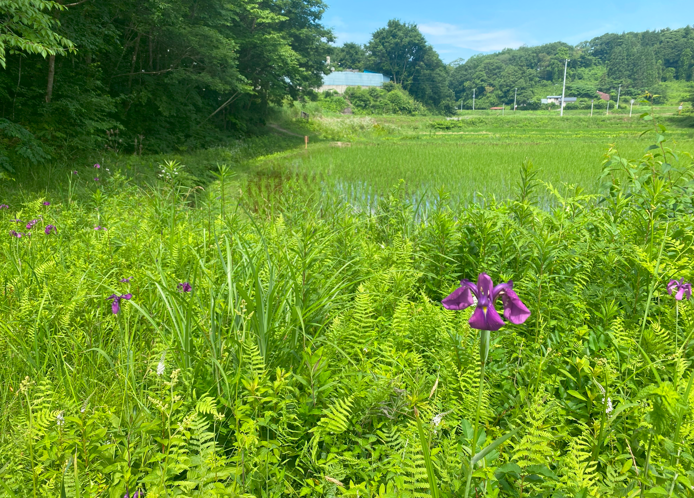
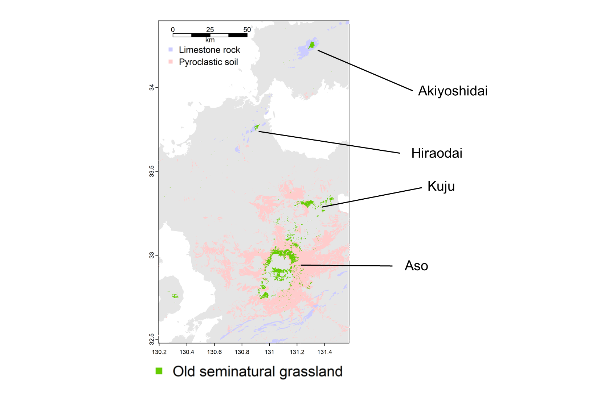
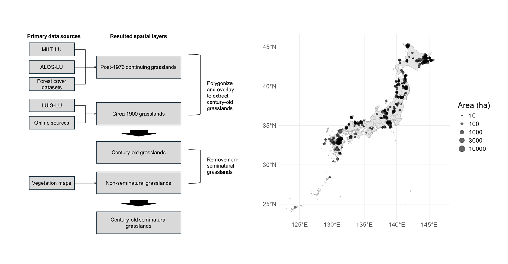
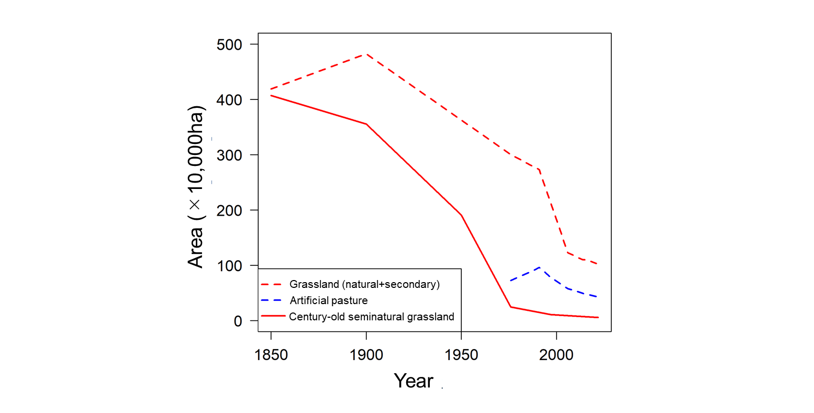
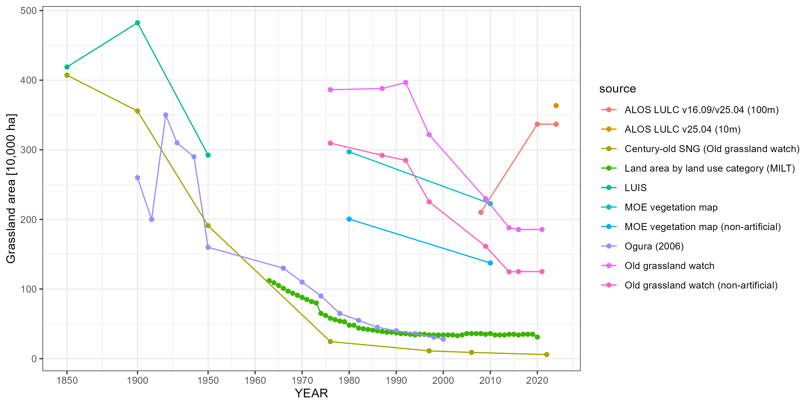
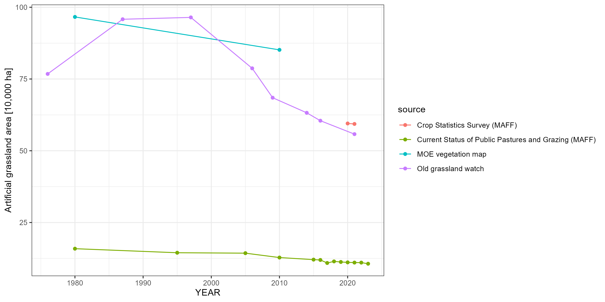

We are compiling spatial and statistical information on the spatio-temporal dynamics of grasslands at the national scale in Japan, with a focus on semi-natural grasslands.
What is old seminatural grasslands?

Figure 1 A historically grassland patch near paddy fields.
Recent research has revealed that semi-natural grasslands in Japan, those that have been continuously managed by humans over long periods, represent ecosystems that differ markedly from both natural grasslands and secondary grasslands with shorter management histories.
Such an importance have not been recognized broadly. Reflecting this, the distribution of such old semi-natural grasslands has never previously been visualized. This page presents the results of such a visualization. The data layer for grasslands with a continuity of 100 years or more is interactively visible here and available for download here (zenodo.org/records/18131104).
This webpage includes research outcomes supported by Environment Research and Technology Development Fund (JPMEERF20234005) of the Environmental Restoration and Conservation Agency provided by Ministry of the Environment of Japan;
(In Japanese) 環境研究総合推進費環境問題対応型研究 課題番号：【4-2305】 2023～2025年度
研究課題： 歴史が生み出す二次的自然のホットスポット：環境価値と保全効果の「見える化」
Basic statistics of seminatural and other types of grasslands
March 29, 2026Author：Shogo Ikari (Think Nature Inc.)CC-BY 4.0
Grasslands in Japan
Grasslands are vegetation communities that establish in environments where forest succession is suppressed by a combination of macro- and micro-scale environmental conditions including climate, soils, and topography, as well as disturbance regimes such as fire, wind, wildlife, and waterlogging, and ongoing human management. Although grasslands occupy only a limited area in Japan, they support a diverse assemblage of species, including glacial relicts persisting since the Last Glacial Period, and constitute ecosystems of exceptionally high biodiversity.
The natural factors contributing to the establishment and persistence of grasslands in Japan include severe climatic conditions above the timberline, wind exposure on mountain ridges and coastal areas, periodic waterlogging, rocky substrates such as limestone and serpentine that inhibit tree establishment, volcanic soils, and herbivory by wild animals. It should be noted, however, that wild ungulates, primarily sika deer, have increased markedly as a consequence of human-driven ecosystem modification, and now contribute to the formation of degraded grasslands dominated by unpalatable plant species. Anthropogenic factors include traditional grassland management practices such as prescribed burning, mowing, and grazing, as well as unintentional human influences associated with clear-cutting, agricultural abandonment, and post-mining succession.
Grassland persistence is maintained by one or more of these factors acting in combination. Among grassland types, semi-natural grasslands refer specifically to those maintained over extended periods in close association with human land use, occurring in relatively productive environments below the timberline and outside wind-exposed zones. Such grasslands range from those established on substrates inherently favorable to grassland formation such as limestone outcrops and volcanic soils in the vicinity of volcanoes, to those whose persistence is largely independent of natural environmental conditions and instead reflects a long history of human resource use. In recent decades, seminatural grasslands in Japan have declined dramatically, driving the rarity of numerous associated species.

Figure 1 Distribution of century-old or older seminatural grasslands in western Honshu and Kyushu region. Old grasslands overlap with area of limestone rock and pyroclastic soil.
Distribution of old seminatural grasslands
Ikari et al. (2026) mapped distribution of seminatural grasslands which are under anthropogenic management for more than 100 years (Figure 2). Century-old seminatural grasslands mapped in this project refer specifically to non-flooded vegetation dominated by herbaceous species that have been prevented from succeeding to forest through long-term anthropogenic management. The study found that the remaining such old seminatural grasslands are less than 60,000 ha in total.

Figure 2 Workflow of century-old seminatural grassland mapping and current distribution of old seminatural grasslands (grasslands larger than 10 ha are mapped).
Decrease rate of century-old grasslands
Using the grassland visualization method described in Ikari et al. (2026), the temporal changes in old seminatural grassland area were quantified at each time point (Figure 3; Table 1). The most rapid loss occurred between 1900 and 1976, during which more than 90% of the total area was lost. Over the past 50 years, the area of old seminatural grasslands has approximately halved every 20 years, with a recent annual decline rate of approximately 2.5%. Such a decrease rate are generally comparable to the numbers reported in Inoue et al. (2021), who described the decrease rate of seminatural grassland in Sugadaira highland, Nagano Prefecture, Japna.
Figure 3 shows the temporal changes in grassland area. In addition to old seminatural grasslands, the areas of natural grasslands, secondary grasslands (including those of short continuity), and artificial grasslands are also presented. Here, grasslands are defined as vegetation with a canopy height of 5 m or less. The trajectory of artificial grassland area was calculated by correcting values based on the Vegetation Survey Maps of Japan (1:25,000 and 1:50,000) published by the Ministry of the Environment and the statistics on public pastures and grazing conditions (in Japanese: 公共牧場・放牧をめぐる情勢) published by the Ministry of Agriculture, Forestry and Fisheries.
Table 1 Change in total area of seminatural grasslands with hundred-year or longer historical continuity.
Year
Area (×10,000ha)
1850
407.2
1900
355.6
1950
191.0
1976
24.5
1997
11.2
2006
8.9
2022
5.9

Figure 3 Temporal change in grassland area in Japan.
Land cover types replacing lost old seminatural grasslands
Analysis of the fates of lost grasslands revealed that the majority were lost to forestation (Table 2). However, the dominant conversion type varied across time periods. Up to the 1970s, conversion to agricultural land accounted for a notable proportion of grassland loss. Between 1976 and 1997, nearly all grassland loss was attributable to forest encroachment. In recent years, conversion to developed land has increased, while the rate of conversion to plantation forest has declined. The increase in conversion to developed land is likely to reflect a growing trend of land use change for solar panel installations and similar infrastructure.
Table 2.
Fates of lost grasslands by period (unit: 10³ ha)
Conversion type
1900–1976
1976–1997
1997–2021
Area (10³ ha)
%
Area (10³ ha)
%
Area (10³ ha)
%
Plantation forest
1,731.0
38.7%
56.9
43.1%
9.6
36.2%
Secondary forest
1,631.9
36.5%
61.6
46.6%
13.1
49.3%
Paddy field
480.1
10.7%
1.3
1.0%
0.2
0.6%
Cropland / Pasture
432.9
9.7%
5.1
3.9%
0.1
0.2%
Built-up land
183.5
4.1%
5.5
4.2%
3.4
12.8%
Golf course etc.
8.4
0.2%
1.8
1.3%
0.3
1.0%
Grassland statistics for Japan
Statistical information on grasslands in Japan suffers from a lack of consistency across data sources. Table 3 summarizes multiple data sources on the distribution and extent of grasslands in Japan. Each source defines and classifies grasslands differently, which is reflected in the substantial variation in reported grassland area among sources (Figures 4 and 5). Here, temporal continuity of grasslands are not considered.
Table 3. Data sources on grassland distribution and extent in Japan.
Source
Grassland types included
Distinction between artificial and non-artificial
Classification of natural grasslands
Spatial data
Land area by land use category (MILT)
natural, seminatural, artificial
no
no
no
ALOS LULC v25.04
natural, seminatural, artificial
no
no
yes
Vegetation map (MOE)
natural, seminatural, artificial
yes
yes
yes
LUIS
natural, seminatural
—
no
yes
Old Grassland Watch
natural, seminatural, artificial
yes
no
yes
Ogura (2006)
natural, seminatural, artificial
no
no
no
Crop Statistics Survey (MAFF)
artificial
—
no
no
Current Status of Public Pastures and Grazing (MAFF)
artificial
—
no
no
Meanings of abbreviations: MILT; Japanese Ministry of Land, Infrastructure, Transport and Tourism, MOE; Japanese Ministry of Environment and MAFF; Japanese Ministry of Agriculture, Forestry and Fisheries, LUIS; Land Use Information System.

Figure 4 Temporal changes in grassland area visualized from different sources. In the compilation of grassland statistics presented here, rocky areas, wetlands, and alpine vegetation are not distinguished from grasslands. Although ALOS LULC and LUIS explicitly distinguish between wetlands and grasslands, the criteria for this distinction are not documented, and considerable confusion between the two categories makes it impractical to treat them as separate in practice. For the MOE vegetation map, two versions are used: the 1:50,000 map produced around 1980 and the 1:25,000 map produced from 1998 onwards. The identification of grasslands from vegetation classification follows Tomitaka et al. (2025), in which vegetation with a canopy height of 5 m or less is treated as grassland, with the exception of subalpine dwarf shrub vegetation. Note that the change in grassland area reported in Ogura (2006) is comparable to that of century-old seminatural grasslands in Old grassland watch rather than total grassland area mapped in vegetation maps or Old grassland watch.

Figure 5 Temporal changes in artificial grasslands. Artificial grasslands include improved pastures (almost entirely comprising introduced forage species), golf courses, and airfields. However, the statistics provided by MAFF cover pastureland only.
Why do the reported grassland statistics vary so markedly? Several reasons can be identified. First, a substantial difference arises depending on whether the statistics were compiled in a bottom-up manner by integrating information from farmers and land managers, or derived from spatially explicit map data. The former approach tends to capture a smaller area than actually exists on the ground. Second, the definition of grassland itself is problematic. Many vegetation types occupy ambiguous positions at the boundary with grassland including post-logging communities, shrubby wetland vegetation, and cliff-face vegetation. The way such ecosystems are classified can substantially alter the final estimates. This boundary problem is particularly pronounced in natural vegetation. Third, the minimum patch size considered (or detectable) also matters. As shown in Figure 3, even within the same data source, aggregation at 100 m resolution versus 10 m resolution yields differences of more than 8% (cf. ALOS LULC v25.04 (10 m) and ALOS LULC v25.04 (100 m)), reflecting the highly fragmented nature of grassland habitats in Japan. It is therefore important to recognize that assessments of grassland distribution and habitat extent are subject to considerable uncertainty. For broad-scale assessments, it is essential to clearly define the criteria used for compilation. For local-scale assessments — such as land use decision-making at the site level — integrating multiple data sources can be an effective approach to mapping important habitats; for example, combining a vegetation map with coarse temporal resolution but fine habitat classification with a land use map derived from satellite imagery with finer temporal resolution.
Arizono S.(1995). 1.2 Land Use in Japan circa 1850 (pp.4-5), 1.3 Land Use in Japan circa 1900 (pp.6-7), Nishikawa O., Himiyama Y. et al. eds., Atlas - Environmental Change in Modern Japan (in Japanese), Asakura Publishing Co., Ltd.
Himiyama Y.(1995). 1.4 Land Use in Japan circa 1950 (pp.8-9), 1.5 Land Use in Japan circa 1985 (pp.10-11), 1.6 Land Use in Japan circa 1900-1985 (pp.12-13), Nishikawa O., Himiyama Y. et al. eds., Atlas - Environmental Change in Modern Japan (in Japanese), Asakura Publishing Co., Ltd.
Ikari, S., Tomitaka, M., Kubota, Y., & Kenta, T. (2026). Geospatial data layer of seminatural grasslands with century-old or longer temporal continuity Preprint. https://doi.org/10.22541/au.176784129.94226004/v1
Japanese Ministry of Land, Infrastructure, Transport and Tourism Land area by land use category https://www.mlit.go.jp/kokudoseisaku/kokudoseisaku_fr3_000033.html
Japanese Ministry of Environment Vegetation Naturalness Survey/Vegetation Survey (Accessed 2026/03/29) https://www.biodic.go.jp/english/kiso/vg/vg_kiso_e.html
Japanese Ministry of Agriculture, Forestry and Fisheries Crop Statistics Survey (Accessed 2026/03/29) https://www.maff.go.jp/j/tokei/kouhyou/sakumotu/menseki/
Japanese Ministry of Agriculture, Forestry and Fisheries Current Status of Public Pastures and Grazing (Accessed 2026/03/29) https://www.maff.go.jp/j/chikusan/sinko/lin/l_siryo/attach/pdf/index-1465.pdf
Ogura, J. (2006). The transition of grassland area in Japan Journal of Kyoto Seika University, 30, 160–172.
Taiki I., Toru O., & Kenta, T. (2021) Qualitative and quantitative analyses of changes in the grassland area in the Sugadaira Highlands, central Japan: A case study of grassland decline in a national park Japanese Journal of Conservation Ecology 26 : 219-228 https://doi.org/10.18960/hozen.2041
Tomitaka, M., Ikari, S., Seki, T., Inoue, T., Kawai, J., Yamamoto, Y., Miyamoto, N., Yoshizawa, A., Kaneko, F., Kubota, Y., and Kenta, T. (2025) Extinction risk status by habitat type: Insights from Japan’s Red Lists (1997–2025) and changes in habitat area Preprint https://doi.org/10.51094/jxiv.835